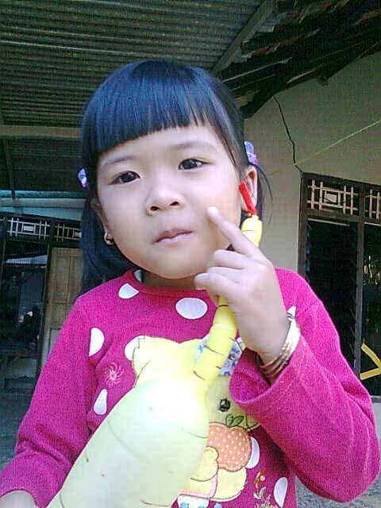
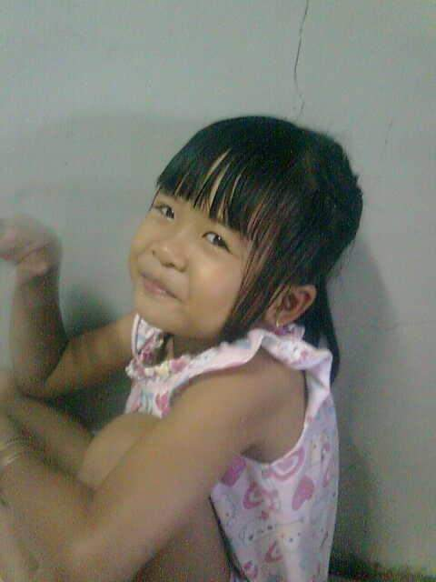
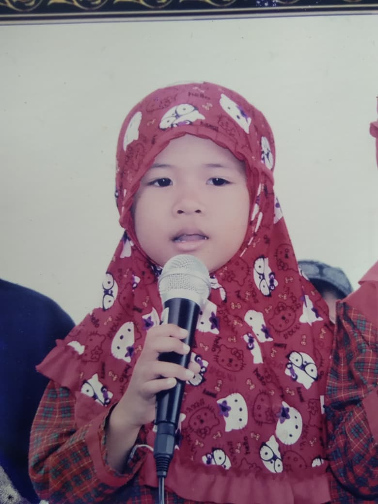
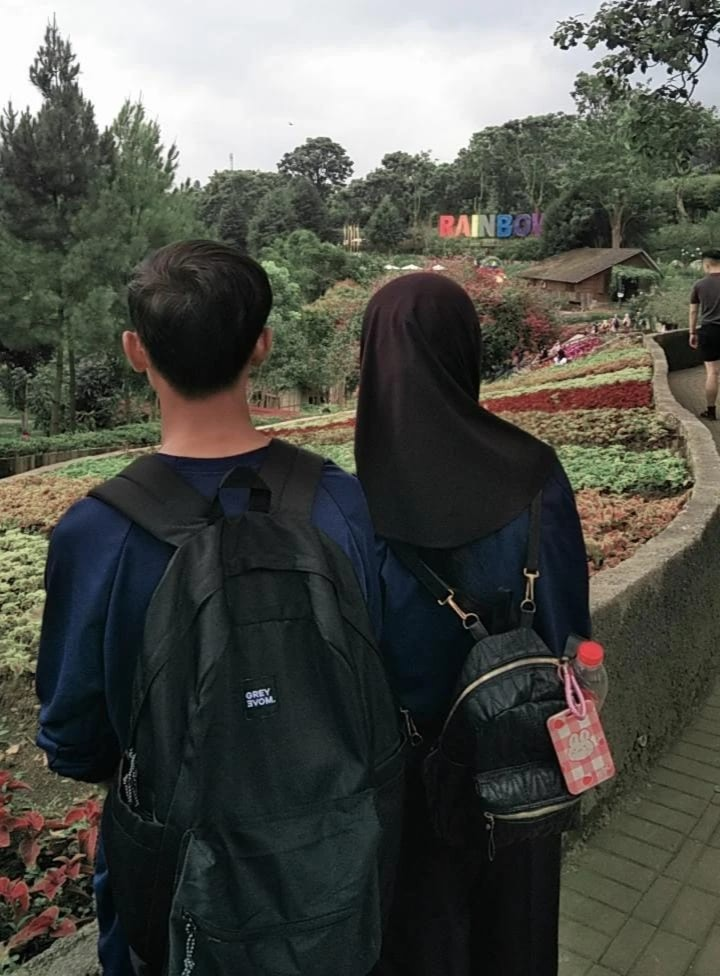
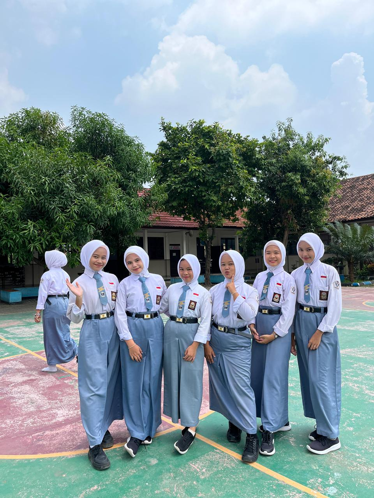
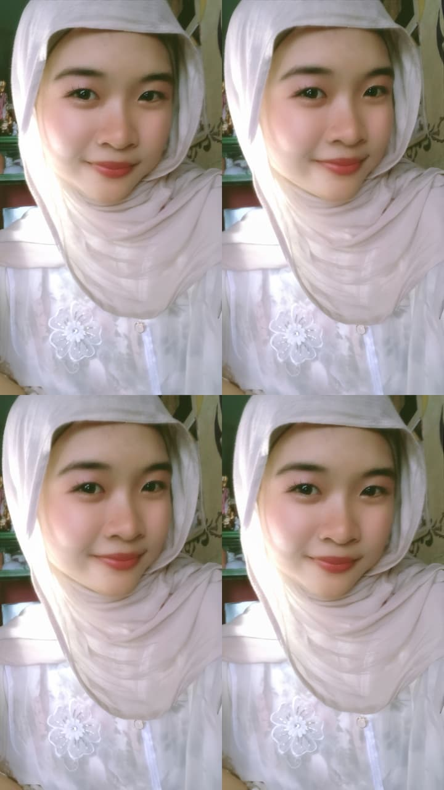

19th
In This Edition
Momen
Setahun lebih tua, sedikit lebih bijak, dan tetap orang yang sama yang bisa tersandung di lantai datar. Begini rasanya berumur sembilan belas.

Di mana semuanya dimulai

Senyum yang tak terlupakan

Momen yang membentuk dirimu
Kamu tidak hanya tumbuh dewasa tahun ini — kamu tumbuh menjadi seseorang yang kita semua kagumi.
Masih ingat ketika kita pikir pandemi akan menghentikan kita? tugas sekolah yang selalu membebani, pengumpulan tugas jam 11:58 malam. Ternyata, kamu tidak hanya bertahan — kamu memimpin di balik itu semua. Umur 19 berarti kamu berhenti meragukan diri sendiri dan mulai sadar bahwa kamu selalu satu langkah di depan.

Umur 19 mengajarkan sesuatu yang tidak pernah diajarkan sekolah: tidak semua yang bertepuk tangan untukmu benar-benar mendukungmu, dan yang mendukungmu jarang mempermasalahkannya. Teman-teman yang datang ke ulang tahunmu di hari weekday, yang menjawab telponmu jam 2 pagi, yang tertawa di lelucon yang sebenarnya tidak lucu — mereka orang-orangmu. Tahun ini, kamu berhenti mengumpulkan teman dan mulai menjaganya.

Ini yang paling penting. Umur 19 adalah saat di mana setiap versi dirimu — yang menangis di pojok kamar, yang tertawa lalu berubah mood nya menjadi seperti sumala, yang begadang ngerjain tugas dan harus tetap bangun pagi — akhirnya menyatu menjadi satu orang. Dan orang itu tidak mencoba menjadi siapa-siapa lagi. Kamu hanya kamu. Sepenuhnya. Tanpa peduli apa kata orang. Dan dunia belum pernah melihat yang seperti ini.

Sebuah Surat
Sayangku,
Aku masih ingat pertama kali kita benar-benar ngobrol. Kamu duduk di depan kelas, sepertinya sedang menilai semua orang diam-diam, dan aku ingat berpikir, "Dia kelihatan menarik." Itu adalah pernyataan paling meremehkan seabad. Kamu adalah seluruh semesta yang dibungkus seragam sekolah, dan aku tidak punya ide betapa hidupku akan berubah drastis.
Beberapa tahun terakhir ini — dari kekacauan indah 3 Sakti Multimedia sampai obrolan larut malam yang mulai dari soal tugas dan berakhir di tempat yang dalam di perasaan kita — telah membentukku dengan cara yang tidak bisa sepenuhnya kuungkapkan. Dan kamu ada di pusat begitu banyak dari itu semua. Bukan karena kamu menuntut perhatian, tapi karena kamu adalah jenis orang yang secara alami menarik orang lain mendekat.
Tawamu punya cara sendiri untuk mengisi seluruh ruangan. Kejujuranmu terkadang kejam, tapi itulah alasan orang percaya padamu. Dan loyalitasmu? Itu jenis yang mereka jadikan bahan novel — tenang, teguh, dan sama sekali tidak goyah. Kamu tidak mencintai dengan berisik, tapi semua orang yang penting tahu persis di mana mereka berdiri denganmu.
Umur 19 akan menjadi tahunmu. Bukan karena tiba-tiba alam semesta memutuskan untuk baik — tidak bekerja seperti itu. Tapi karena kamu sudah menghabiskan delapan belas tahun membangun seseorang yang luar biasa, dan dunia akhirnya akan melihat apa yang sudah kulihat sejak awal. Setiap air mata yang kau tahan, setiap kali kamu memilih untuk hadir padahal akan lebih mudah menghilang, setiap tindakan keberanian kecil yang tidak ada yang lain perhatikan — itu bukan apa-apa. Itu segalanya.
Aku berharap tahun ini membawamu lebih dekat ke mimpi-mimpimu yang sebenarnya, bukan yang kamu ceritakan ke orang di pesta biar terdengar keren. Aku berharap kamu pergi ke suatu tempat yang mengubah isi dadamu. Aku berharap kamu memaafkan diri sendiri untuk hal-hal yang sudah terlalu lama kamu pikul. Dan aku berharap — lebih dari apa pun — bahwa kamu tahu, di bagian paling sunyi di hatimu, bahwa kamu dicintai. Bukan untuk apa yang kamu raih. Bukan untuk bagaimana penampilanmu. Tapi untuk siapa dirimu, jam 3 pagi, saat tidak ada yang menonton.
Selamat ulang tahun ke-19. Ini untuk bab berikutnya — dan setiap halaman yang indah, berantakan, dan tak terlupakan di dalamnya.
Dengan segenap cintaku,
Orang Spesialmu
4 April 2026
Dan setiap momen indah, berantakan yang akan datang.